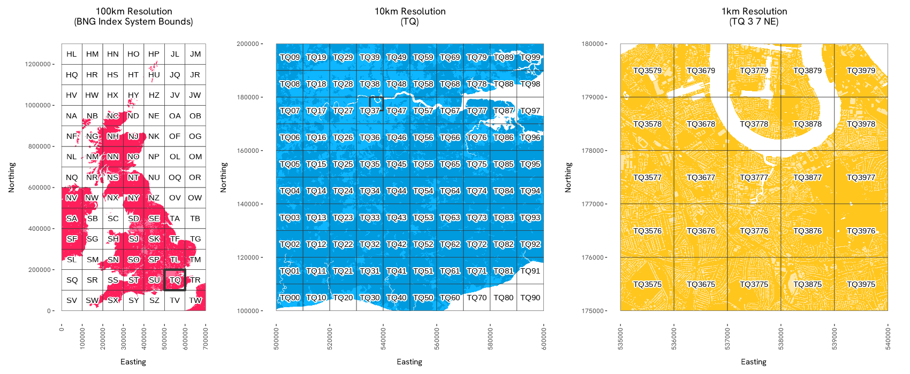
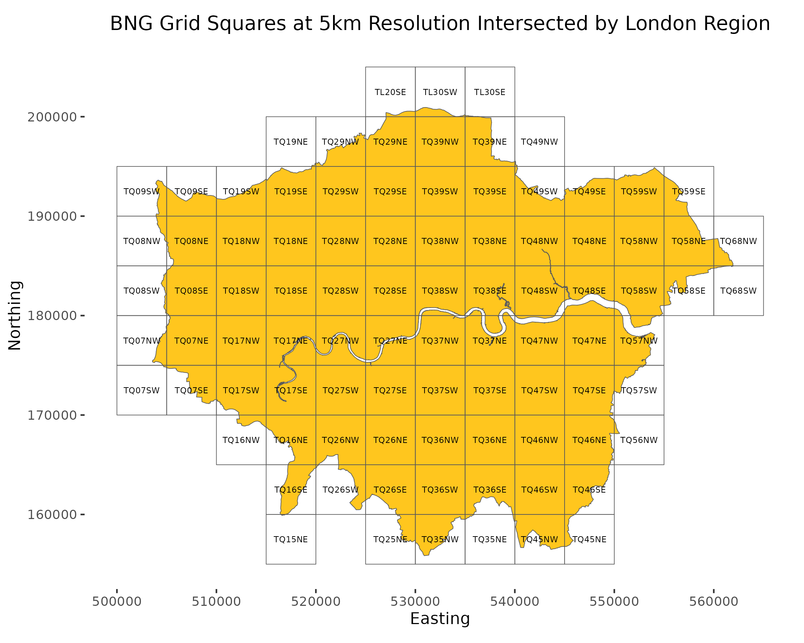
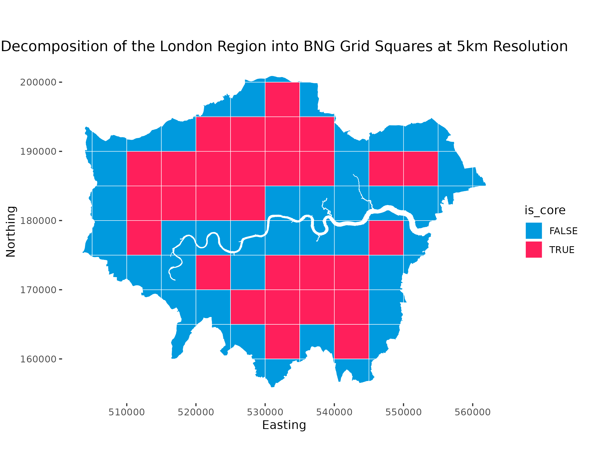

An R library for Ordnance Survey’s British National Grid (BNG) index system. This library provides tools for working with the BNG, a rectangular Cartesian grid system used to identify and index locations across Great Britain into grid squares at various resolutions.
Overview
The osbng R package provides a programmatic interface to the BNG, supporting efficient grid-based indexing and spatial analysis. This enables applications such as statistical aggregation, data visualisation, and data interoperability using BNG grid references. Designed for developers working with geospatial data in the context of Great Britain, the library offers tools to simplify working with the BNG, facilitating both technical integration into geospatial workflows and practical exploration of the index system’s structure.
The package supports the ‘standard’ BNG metre-based resolutions, which represent powers of ten from 1m to 100km (1m, 10m, 100m, 1km, 10km, 100km). It also supports the ‘intermediate’ quadtree resolutions (5m, 50m, 500m, 5km, 50km), identified by an ordinal (NE, SE, SW, NW) BNG reference direction suffix.

Installation
Currently, you can install the latest version of osbng from GitHub with:
remotes::install_github("OrdnanceSurvey/osbng-r")Once installed, load the package to use it:
Complimetary tools
-
osbng-py, a Python package with broad parity to theRpackage. -
osbng-grids, for BNG grid data in GeoParquet and GeoPackage (GPKG) formats. -
mosaic, a Databricks package providing geospatial grid indexing using the BNG for Apache Spark.
Usage
The osbng package supports different interactions with the BNG index system (e.g. indexing, hierarchy, traversal). A high-level summary of each task is provided below:
BNG Reference
osbng implements a custom BNG reference object, BNGReference. The BNGReference object validates the reference and provides access to custom functions to work with the reference.
library(osbng)
bng_ref <- as_bng_reference("ST57SE")
print(bng_ref)
#> <BNGReference[1] with Resolution=5km>
#> [1] <ST 5 7 SE>
get_bng_resolution(bng_ref)
#> [1] 5000
get_bng_resolution_string(bng_ref)
#> [1] "5km"Indexing
Provides the ability to index and work with coordinates and geometries against the BNG index system. This includes:
- Encoding easting and northing coordinates into
BNGReferenceobjects at a specified resolution. - Decoding
BNGReferenceobjects back into coordinates, bounding boxes and grid squares asgeosgeometries. - Indexing bounding boxes and
geosgeometries into grid squares at a specified resolution for spatial analysis.


The following example demonstrates a round trip of constructing a BNGReference object from easting and northing coordinates, and then decoding back into coordinates, bounding box, and geos geometry:
bng_ref <- xy_to_bng(easting = 356976, northing = 171421, resolution = "5km")
bng_to_xy(bng_ref, position = "lower-left")
#> [,1] [,2]
#> [1,] 355000 170000
bng_to_bbox(bng_ref)
#> [,1] [,2] [,3] [,4]
#> [1,] 355000 170000 360000 175000
bng_to_grid_geom(bng_ref, "wkt")
#> [1] "POLYGON ((355000 170000, 360000 170000, 360000 175000, 355000 175000, 355000 170000))"Hierarchy
Provides functionality to navigate the hierarchical structure of the BNG index system. This includes:
- Returning parents and children of
BNGReferenceobjects at specified resolutions.
The following example returns a parent of a BNGReference:
bng_ref <- as_bng_reference("ST5671SE")
get_bng_resolution(bng_ref)
#> [1] 500
bng_to_parent(bng_ref, resolution = "10km")
#> <BNGReference[1] with Resolution=10km>
#> [1] <ST 5 7>Traversal
Provides functionality for traversing and calculating distances within the BNG index system. It supports spatial analyses such as distance-constrained nearest neighbour searches and ‘distance within’ queries by offering:
- Generation of k-discs and k-rings around a given grid square.
- Identification of neighbouring grid squares and checking adjacency.
- Calculating the distance between grid square centroids.
- Retrieving all grid squares within a specified absolute distance.
The following example creates a hollow ring of grid squares a distance of k grid squares:
bng_kring(as_bng_reference("SU1234"), k = 2)
#> [[1]]
#> <BNGReference[16] with Resolution=1km>
#> [1] <SU 10 32> <SU 11 32> <SU 12 32> <SU 13 32> <SU 14 32> <SU 10 33>
#> [7] <SU 14 33> <SU 10 34> <SU 14 34> <SU 10 35> <SU 14 35> <SU 10 36>
#> [13] <SU 11 36> <SU 12 36> <SU 13 36> <SU 14 36>Grids
Provides functionality to generate BNG grid square data within specified bounds. This includes:
- Grid square data covering the BNG index system bounds at 100km, 50km, 10km, 5km and 1km resolutions.
- Grid squares can be filtered to specific regions of interest.
This functionality requires the sf package to be available. The following example constructs an sf data frame:
library(sf)
#> Linking to GEOS 3.9.1, GDAL 3.3.2, PROJ 7.2.1; sf_use_s2() is TRUE
bng_grid_100km()
#> Simple feature collection with 91 features and 1 field
#> Geometry type: POLYGON
#> Dimension: XY
#> Bounding box: xmin: 0 ymin: 0 xmax: 7e+05 ymax: 1300000
#> Projected CRS: OSGB 1936 / British National Grid
#> First 10 features:
#> bng_reference geometry
#> 1 <SV> POLYGON ((0 0, 1e+05 0, 1e+...
#> 2 <SW> POLYGON ((1e+05 0, 2e+05 0,...
#> 3 <SX> POLYGON ((2e+05 0, 3e+05 0,...
#> 4 <SY> POLYGON ((3e+05 0, 4e+05 0,...
#> 5 <SZ> POLYGON ((4e+05 0, 5e+05 0,...
#> 6 <TV> POLYGON ((5e+05 0, 6e+05 0,...
#> 7 <TW> POLYGON ((6e+05 0, 7e+05 0,...
#> 8 <SQ> POLYGON ((0 1e+05, 1e+05 1e...
#> 9 <SR> POLYGON ((1e+05 1e+05, 2e+0...
#> 10 <SS> POLYGON ((2e+05 1e+05, 3e+0...